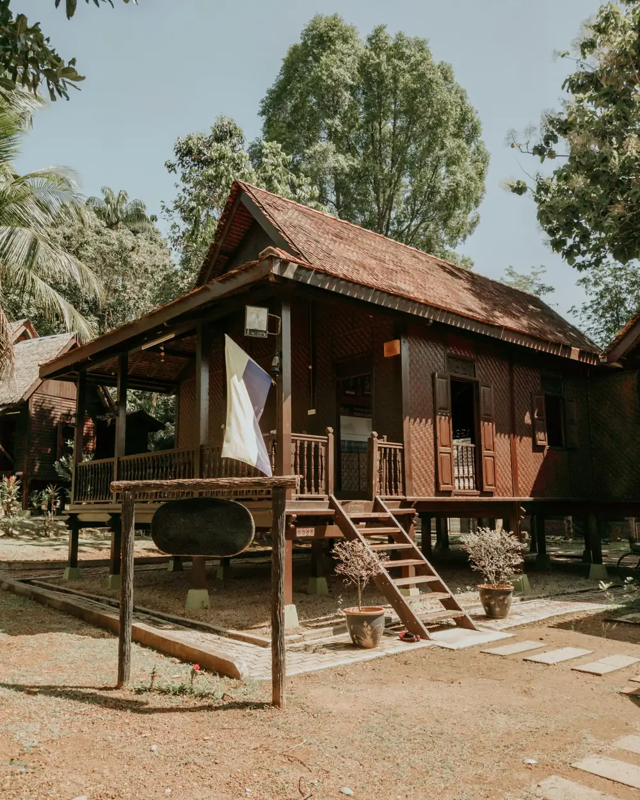
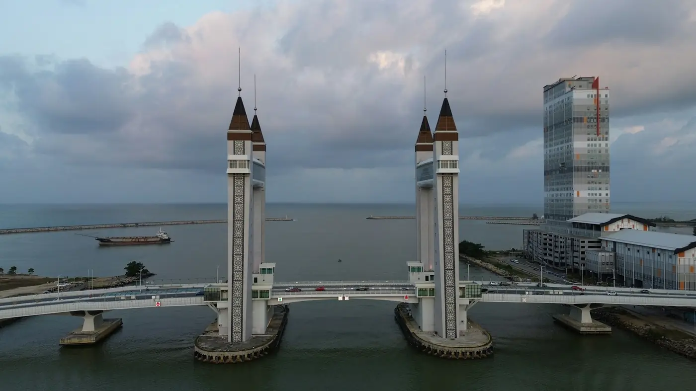

Suasana dahulu
Foto utama memberi gambaran awal; keterangan foto menerangkan dengan jujur apa yang dilihat.

Projek konsep · Anjung Nyiur ialah penginapan rekaan, bukan hartanah sebenar.
Kembali ke portfolioKonsep laman penginapan · haziqbuilds
Anjung Nyiur menunjukkan bagaimana sebuah laman homestay boleh menyampaikan suasana, kemudahan dan cara menghubungi hos dengan lebih jelas — terus dari telefon tetamu.
Ini projek demo. Anjung Nyiur bukan tempat sebenar dan tidak menerima tempahan.
Pengunjung biasanya mahu tahu rupa tempat, apa yang disediakan dan bagaimana hendak menghubungi pemilik. Konsep ini menyusun maklumat itu menjadi perjalanan yang ringkas, mesra telefon dan mudah dipercayai.
Direka untuk tetamu sebenar
Setiap bahagian ada tugasnya. Tiada maklumat penting disorok di sebalik menu yang rumit.
Foto utama memberi gambaran awal; keterangan foto menerangkan dengan jujur apa yang dilihat.

Susun atur, ruang dan jawapan lazim disampaikan dalam bahasa yang ringkas serta boleh dibaca pada skrin kecil.

Butang pertanyaan boleh disambungkan kepada saluran sebenar pemilik — contohnya WhatsApp atau borang laman.

Semua foto di halaman ini ialah rujukan visual dari lokasi lain. Ia bukan gambar penginapan, pemandangan dari hartanah atau bukti lokasi Anjung Nyiur.
Untuk pemilik penginapan
Kongsikan jenis penginapan dan apa yang anda mahu laman itu capai. Kita boleh mulakan dengan perbualan ringkas.
Minta sebut harga